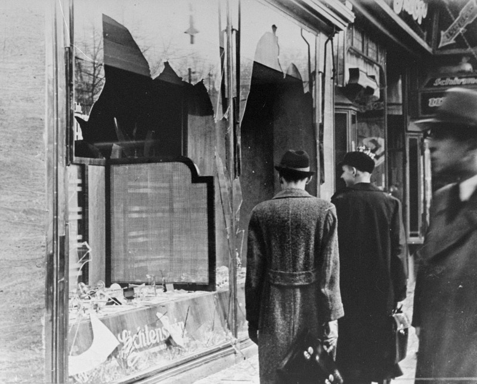
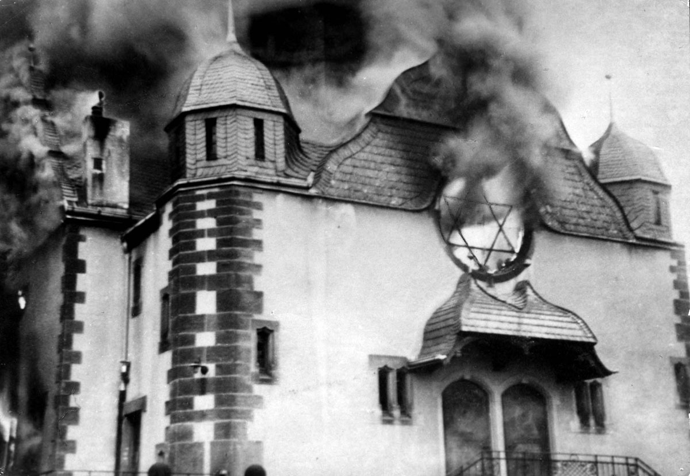
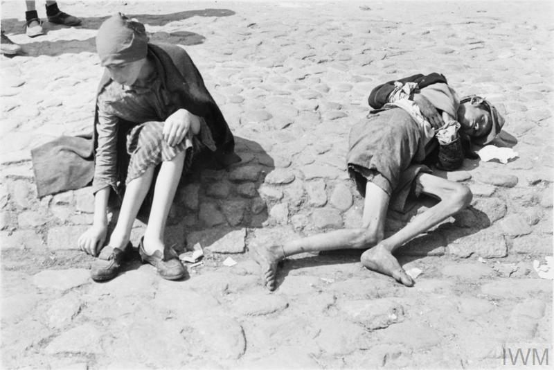
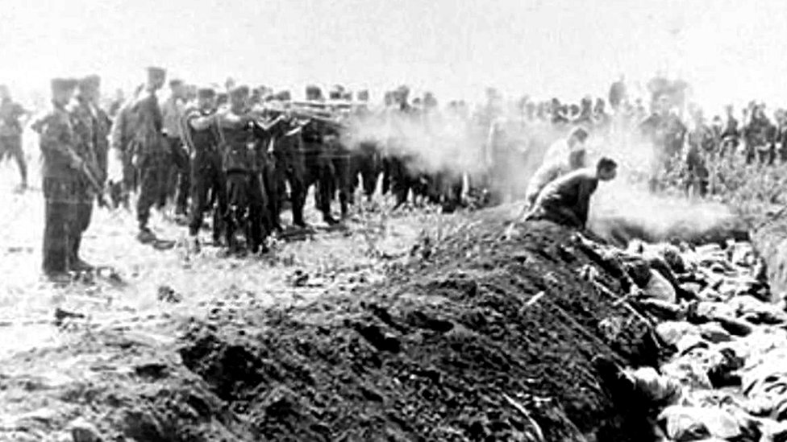
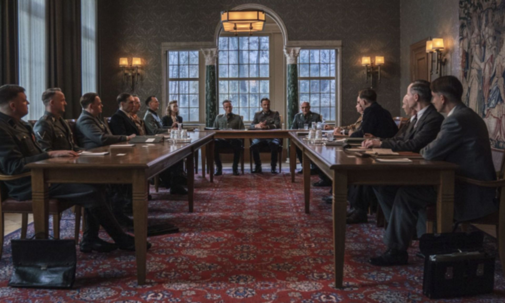
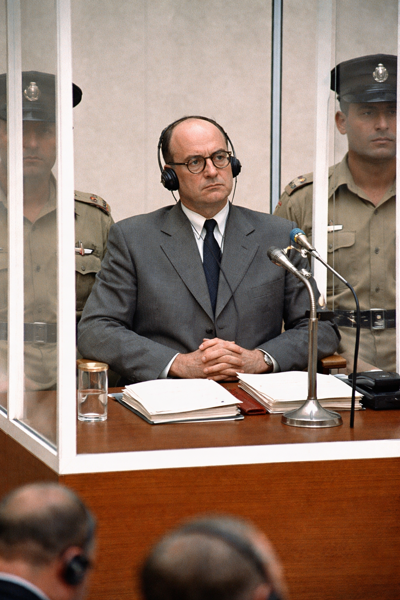

What Were We Fighting?
Section I
The true nature of fascist violence — and why it demanded a total response
What Were We Fighting?
- The war against expansionist fascism was not only a struggle against aggressive dictatorships — it was a war against regimes that made **mass murder and racial conquest** central policy
- Nazi Germany and Imperial Japan both pursued systematic campaigns of terror, enslavement, and extermination on a staggering scale
- Understanding the full scope of these atrocities helps explain why the United States ultimately had to fight a total war — and why partial measures or appeasement could not suffice

Raising the Flag on Iwo Jima · Joe Rosenthal, 1945 · Public Domain
Section II
The Holocaust did not begin with gas chambers. It began with paperwork.
Phase 1 — Legal Persecution (1933–1939)
- April 1933 — nationwide boycott of Jewish businesses; Jews purged from civil service, law, and medicine by state decree
- Nuremberg Laws (1935) — Jews stripped of citizenship; marriage between Jews and non-Jews criminalized
- Laws were carefully engineered to be enforceable — racial definitions, documentation systems, administrative apparatus
- Race was not metaphor — it was law

Destroyed Jewish Businesses · Berlin · Bundesarchiv · Wikimedia Commons
Kristallnacht — November 9–10, 1938
- SA and SS units destroy 7,500+ Jewish businesses, burn 267 synagogues, kill at least 91 Jews outright
- 30,000+ Jewish men arrested and sent to Dachau, Sachsenhausen, Buchenwald — first mass incarceration
- Presented as spontaneous popular uprising — it was a coordinated state operation
- The message: legal apparatus would be supplemented by physical terror

Aftermath of Kristallnacht · Berlin · Bundesarchiv · Wikimedia Commons
Phase 2 — Ghettos and Starvation as Policy
- Invasion of Poland (Sept. 1939) brings 3.3 million Polish Jews under German control — too large for emigration policies
- Warsaw Ghetto — 400,000 people confined to 1.3 square miles; density 20x that of Manhattan
- Food allocations calculated deliberately below subsistence — starvation was policy, not accident
- 100,000+ died in Warsaw Ghetto from starvation and disease before deportations began

Warsaw Ghetto
The Einsatzgruppen — Mobile Killing Squads
- Invasion of Soviet Union (June 1941) — SS deploys four Einsatzgruppen across the entire Eastern Front
- Method: communities assembled, marched to pre-dug pits, shot, buried — direct, local, face-to-face killing
- Victims: Jewish communities, Soviet commissars, Roma, and others designated racially dangerous
- By end of 1941: 500,000 murdered; by war's end: 1.5 million+

German troops executing a group of Poles.
Babi Yar — 33,771 in Two Days
- September 29–30, 1941 — Einsatzgruppe C and German Order Police assemble 33,771 Jewish men, women, and children outside Kyiv
- Marched to the Babi Yar ravine — shot over two days
- Operation meticulously documented in German field reports — the numbers recorded as routine administration
- Babi Yar was not an anomaly — it was a template, repeated at hundreds of sites across the Soviet Union

Babi Yar Massacre Site · 1941 · Wikimedia Commons
Wannsee — Coordinating the Final Solution
- January 20, 1942 — Reinhard Heydrich convenes 15 senior Nazi officials to coordinate the logistics of extending killing across all of German-occupied Europe
- The conference lasted ninety minutes
- The Wannsee Protocol survives in its entirety — a document of bureaucratic casualness about the murder of eleven million people
- Wannsee did not decide to kill the Jews — that decision was already being implemented. It coordinated.

Wannsee Conference Room · Berlin · Wikimedia Commons
Auschwitz — Industrial Extermination
- Extermination camps — purpose-built killing facilities distinct from concentration camps; Treblinka, Sobibor, Belzec, Chelmno, Auschwitz-Birkenau
- Auschwitz process: arrival by train, selection on the platform — fit for labor spared temporarily; all others proceeded directly to gas chambers
- Killed with Zyklon B; bodies cremated; gold teeth extracted; hair used for industrial purposes
- 1.1 million murdered at Auschwitz — approximately 90% Jewish

Selection at Birkenau · 1944 · Wikimedia Commons
The Scale of the Killing
- Jews — ~6,000,000
- Soviet civilians — ~5,700,000
- Polish civilians — ~1,800,000–2,000,000
- Political prisoners — ~1,500,000+
- Roma & Sinti — ~220,000–500,000
- Disabled persons (T4 program) — ~250,000–300,000
- Gas chambers — ~2.7–3.0 million
- Einsatzgruppen shootings — ~1.5–2.0 million
- Starvation / ghettos — ~800,000+
- Forced labor deaths — ~2–3 million
- Hunger Plan — ~4–5 million
- Death marches — ~250,000–500,000
⏸ Pause & Reflect
The Holocaust began with boycotts and paperwork in 1933. It ended with gas chambers and cremation ovens in 1945.
How does a modern state arrive at industrial genocide through a sequence of steps that each seemed, at the time, like a manageable policy decision?
Section III
Who actually did this — and what kind of people were they?
Eichmann — The Bureaucrat of Genocide
- SS-Obersturmbannführer, head of Section IV B4 — Jewish Affairs; chaired the Wannsee Conference
- His job: identify, document, concentrate, transport, and deliver the Jewish populations of occupied Europe to the extermination camps — he took pride in his efficiency
- Escaped to Argentina after the war; kidnapped by Israeli Mossad in 1960; tried in Jerusalem 1961
- In the glass booth: spoke in bureaucratic clichés, insisted he merely followed orders, denied personal responsibility for any murder

Adolf Eichmann at Trial · Jerusalem · 1961 · Wikimedia Commons
Mengele — Medicine as Atrocity
- Doctorates in both medicine and anthropology from respected German universities; arrived at Auschwitz-Birkenau May 1943
- Stood on the arrival platform, directing prisoners with a flick of the wrist — labor or immediate death
- Conducted medical experiments on thousands of prisoners with full institutional support of the Nazi medical establishment
- Escaped to South America after the war; never tried; died in Brazil 1979

Josef Mengele · SS Physician, Auschwitz · Wikimedia Commons
Mengele's Experiments — What He Actually Did
- Assembled 1,500+ twin pairs at Auschwitz
- Infected one twin with typhus, malaria, or tuberculosis — used the other as a control — then killed both with chloroform injection to the heart for simultaneous autopsy
- Attempted to surgically join twins to create artificial conjoined pairs
- Injected toxic dyes into children's eyes to change brown irises to blue — causing blindness and death
- Exposed men and women to massive X-ray doses; injected caustic chemicals into reproductive organs — Nazi sterilization research
- Infected Roma children with noma — a gangrenous facial disease — and performed disfiguring surgeries without anesthesia
- Research written up as scientific reports and presented at medical conferences
- Primary evidence: testimony of twin survivors, beginning at Nuremberg
⏸ Pause & Reflect
Eichmann managed deportation schedules. Mengele held medical doctorates. Lawyers drafted the Nuremberg Laws. Engineers designed the crematoria. Railroad administrators kept the trains running.
What does the participation of credentialed professionals in atrocity tell us about the relationship between expertise and moral responsibility?
Section IV
What most American students were never taught — and why that silence is itself a historical fact
Japanese Imperial Violence — Structure and Scale
- No single directive equivalent to the Final Solution — violence was decentralized, embedded in military operations and occupation policy
- Driven by military command culture, imperial ideology, and the racial classification of Chinese and other Asian peoples as inferior and expendable
- Tokyo War Crimes Tribunal — prosecution more complex; U.S. protected Emperor Hirohito and Unit 731 scientists from trial
- Chinese civilians — ~10–15 million killed
- Southeast Asian civilians — ~3–5 million
- Forced laborers — ~2–4 million
- Korean civilians — ~500,000–1,000,000
- Filipino civilians — ~500,000–1,000,000
- Estimated total: ~15–20+ million
The Rape of Nanking — December 1937
- Japanese forces capture Nanking December 13, 1937 — seven weeks of systematic murder, rape, looting, and arson follow
- 200,000–300,000 Chinese civilians and POWs killed — mass shootings, beheadings, bayonet practice on living prisoners, burning
- 20,000–80,000 women and girls raped
- Japanese newspapers reported it as a military triumph — including officer beheading competitions covered as sport

Nanking Massacre · December 1937 · Wikimedia Commons
A Witness in the City
Unit 731 — Human Experimentation as State Policy
- Imperial Japanese Army's secret biological and chemical warfare research program, headquartered near Harbin, Manchuria
- Cover name: Epidemic Prevention and Water Purification Department of the Kwantung Army
- Commanded by General Shirō Ishii — victims referred to in Japanese military documents as maruta — "logs"
- Field-tested biological weapons on Chinese civilian populations — plague-infected flea bombs caused outbreaks killing an estimated 200,000–300,000

Unit 731 Facility · Harbin, Manchuria · Wikimedia Commons
Unit 731 — What They Actually Did
- Vivisection of living subjects without anesthesia — organs removed while subjects were conscious
- Deliberate infection with plague, cholera, typhoid, and anthrax to study disease progression in living subjects
- Frostbite experiments — subjects exposed to freezing conditions; flesh removed to study tissue damage
- Pressure chamber experiments — rapid decompression to study effects on the body
- Results written as scientific reports and presented at medical conferences — same as Mengele
- Victims: Chinese civilians, Soviet POWs, Korean laborers — all classified as maruta
- General MacArthur authorized immunity for Ishii and Unit 731 scientists — existence suppressed until the 1980s
- Scientists returned to civilian life; several had distinguished postwar careers in Japanese medicine
The Comfort Women System
- Imperial Japanese Army operated an official network of military brothels across occupied territories — direct military policy, not private enterprise
- Estimated 200,000 women and girls — primarily Korean, Chinese, Filipino, and Dutch — forced into sexual slavery
- The army organized recruitment (frequently through deception or coercion), transportation, medical inspection, and regulation
- Women assigned to service multiple soldiers daily; many killed on Japanese retreat to prevent testimony

Korean Women Under Japanese Annexation · Wikimedia Commons · Public Domain
The Bataan Death March — April 1942
- 75,000 American and Filipino troops surrender on the Bataan Peninsula, Philippines — April 9, 1942
- Forced march of 65 miles to Camp O'Donnell — no food, almost no water, no medical care; tropical heat exceeding 90°F
- Japanese guards beat, bayoneted, and shot prisoners who fell or lagged; prisoners who stopped to drink from roadside puddles were killed
- 7,000–10,000 died on the march; thousands more died in the camp in the weeks that followed

Bataan Death March · April 1942 · U.S. Army · Wikimedia Commons
⏸ Pause & Reflect
The Holocaust and Japanese wartime atrocities are roughly comparable in scale. The Holocaust is taught in virtually every American school. Japanese imperial violence is largely absent from standard curricula.
What explains this disparity? What does it tell us about how nations choose which atrocities to remember?
Section V
The analytical reckoning — how do ordinary people commit extraordinary atrocity?
Arendt — The Banality of Evil
- Hannah Arendt covered the Eichmann trial for The New Yorker; published Eichmann in Jerusalem (1963)
- Central argument: Eichmann was not a monster — not psychologically abnormal, not driven by exceptional hatred
- He had replaced thinking with role-performance — operated entirely within administrative categories without asking whether they were morally permissible
- The evil was mundane — it resided not in his character but in the structure of the organization he served and his willingness to function within it without reflection

The Most Unsettling Sentence
Two Models of Perpetration
- Administrative suspension of moral judgment
- Role-performance replaces thinking
- Careerism and efficiency as sufficient motivation
- Murder processed as logistics
- Requires: institutions that normalize the abnormal
- Active recruitment of professional expertise
- Ideology given a laboratory coat
- Scientific language as moral camouflage
- Murder processed as research
- Requires: institutions that weaponize credentials
⏸ Pause & Reflect
Arendt says the perpetrators were "terrifyingly normal." Stangneth says Eichmann was more ideologically committed than he appeared.
Is it more disturbing if the Holocaust was perpetrated by monsters — or by ordinary people?
Neither answer is comfortable. That is exactly the point.
The asymmetry between Holocaust memory and Japanese atrocity memory in American culture is not a product of historical evidence — the death tolls are comparable. It reflects several postwar political decisions. The United States made a strategic choice to protect Emperor Hirohito from prosecution at the Tokyo Tribunal, fearing that his removal would destabilize the occupation. The U.S. also granted immunity to Unit 731 scientists in exchange for biological warfare research data. The Cold War alliance with Japan as a bulwark against Soviet and Chinese communism created strong incentives to present Japan as a reformed partner rather than an unaccounted perpetrator. American curricula tend to center American experiences — and while the Bataan Death March appears in some curricula, the broader scope of Japanese imperial violence (Nanking, Unit 731, the Comfort Women system) does not.
Two laws enacted at the Nazi Party congress in Nuremberg formalized racial hierarchy as the legal foundation of the German state. The Reich Citizenship Law stripped Jews of German citizenship, reducing them to "subjects" without civic rights. The Law for the Protection of German Blood and German Honor criminalized marriage and sexual relations between Jews and non-Jews. A supplementary decree defined who counted as Jewish — those with three or four Jewish grandparents were classified as Jews regardless of their own religious practice; those with one or two Jewish grandparents occupied an intermediate category. The laws required documentation systems, registries, and administrative enforcement. They converted Nazi racial ideology from rhetoric into enforceable law — and provided the legal architecture for all subsequent persecution.
The first concentration camps — distinct from the later extermination camps — were established beginning in 1933 and were intended initially for political prisoners: communists, socialists, trade unionists, and other opponents of the Nazi regime. Dachau, established in March 1933 outside Munich, was the first and served as a model for subsequent camps. By the time of Kristallnacht in November 1938, the camp system had expanded to include Sachsenhausen (1936) and Buchenwald (1937). The 30,000+ Jewish men arrested during Kristallnacht and sent to these camps were the first mass incarceration of Jews as Jews — as opposed to Jews arrested for political activity. Most were released after weeks or months on the condition that they emigrate and surrender their property. The experience was designed to terrorize and accelerate emigration.
Established in October 1940, the Warsaw Ghetto was the largest of the Nazi-imposed Jewish ghettos in occupied Poland, confining approximately 400,000 people to a walled area of about 1.3 square miles in the heart of Warsaw — a population density approximately twenty times that of Manhattan. German authorities deliberately set food rations below subsistence level; the official ration for Jews in Warsaw in 1941 was approximately 184 calories per day (the German population received 2,310 calories). Starvation and disease — primarily typhus — killed more than 100,000 people before the deportations to Treblinka began in July 1942. The Warsaw Ghetto Uprising of April–May 1943, in which Jewish fighters held out against SS troops for nearly a month, became one of the most significant acts of resistance to Nazi occupation. The Germans suppressed the uprising and razed the ghetto; approximately 13,000 Jews died in the fighting and 56,000 survivors were deported to extermination camps.
The Einsatzgruppen (literally "task forces") were SS mobile killing units that followed the Wehrmacht into the Soviet Union beginning in June 1941. Organized into four main groups (A, B, C, D) covering different sectors of the Eastern Front, they were tasked with eliminating "racial and political enemies" — primarily Jews, Soviet political commissars, and Roma. Each group was subdivided into smaller Einsatzkommandos that operated at the local level. The killing method was direct: Jewish communities would be assembled under the pretext of "resettlement," marched to a site outside town — typically a ravine, forest clearing, or anti-tank ditch — and shot. The Einsatzgruppen operated with the cooperation of the regular German Army (Wehrmacht), German Order Police, and local auxiliary collaborators in the occupied territories. Their operations produced detailed reports to Berlin recording the numbers killed as administrative statistics. By the end of 1941, they had murdered approximately 500,000 people; by the end of the war, more than 1.5 million.
Babi Yar (Ukrainian: "old woman's ravine") is a ravine on the northwestern outskirts of Kyiv, Ukraine, that became the site of the largest single massacre of the Holocaust. On September 29–30, 1941, two days after German forces occupied Kyiv, Einsatzgruppe C and German Order Police units assembled approximately 33,771 Jewish men, women, and children — the entire remaining Jewish population of the city — and shot them into the ravine over two days. The operation was recorded in a field report transmitted to Berlin with the matter-of-fact precision of a routine administrative communication. The Nazis subsequently used the ravine as a mass execution site for other groups throughout the occupation; the total number killed there over three years of occupation is estimated at 100,000 to 150,000. Soviet forces attempted to obliterate the site after recapturing Kyiv; the ravine was partially filled in. A monument was erected in 1976; a more comprehensive memorial park was established in 1991 after Ukrainian independence.
The minutes of the Wannsee Conference, drafted by Adolf Eichmann and signed by Reinhard Heydrich, survive in a single copy discovered in 1947 in the files of the German Foreign Office. The document is fifteen pages long and discusses the "Final Solution to the Jewish Question" entirely in bureaucratic euphemism — "evacuation," "special treatment," "resettlement." The 11 million Jews listed by country for inclusion in the program are discussed in statistical tables. The specific killing methods are never named. The protocol is not a record of a decision — the decision had already been made — but of an administrative coordination meeting in which senior officials from the Foreign Office, the Justice Ministry, and the SS discussed how to extend the killing program to all of occupied Europe. Its significance as a historical document lies precisely in its bureaucratic casualness: the gap between the language used and the reality described is itself evidence of how the regime normalized mass murder.
These terms are frequently confused and are not synonymous. Concentration camps were detention facilities where prisoners were held, used for forced labor, and subjected to brutal conditions that frequently resulted in death — but killing was not the primary institutional purpose. Extermination camps (Vernichtungslager) were purpose-built killing facilities whose primary function was the immediate murder of arriving prisoners. The six dedicated extermination camps — Auschwitz-Birkenau, Treblinka, Sobibor, Belzec, Chelmno, and Majdanek — were all located in occupied Poland. The Operation Reinhard camps (Treblinka, Sobibor, Belzec) were designed almost exclusively for immediate killing: there was almost no labor component; virtually everyone who arrived was dead within hours. Auschwitz-Birkenau was a hybrid: it combined a forced labor camp with an extermination complex. Of the approximately 1.1 million people murdered at Auschwitz, roughly 90% were Jewish; the remainder included Soviet POWs, Polish political prisoners, Roma, and others.
By Group (estimated deaths):
Jews: ~6,000,000 | Soviet civilians (non-Jewish): ~5,700,000 | Polish civilians (non-Jewish): ~1,800,000–2,000,000 | Political prisoners: ~1,500,000+ | Roma & Sinti: ~220,000–500,000 | Disabled persons (T4): ~250,000–300,000 | Serb civilians: ~300,000–500,000 | Homosexual men: ~5,000–15,000 | Jehovah's Witnesses: ~1,900–2,500
Estimated Total: ~17–20 million non-military deaths
By Method (estimated deaths):
Gas chambers: ~2.7–3.0 million | Einsatzgruppen shootings: ~1.5–2.0 million | Concentration camps (starvation/abuse): ~1.5–2.0 million | Ghettos (starvation/disease): ~800,000+ | Hunger Plan/starvation policies: ~4–5 million | Forced labor deaths: ~2–3 million | T4 euthanasia program: ~250,000–300,000 | Death marches: ~250,000–500,000 | Medical experimentation: ~10,000–20,000
Operation T4 (named for its administrative headquarters at Tiergartenstrasse 4 in Berlin) was the Nazi regime's systematic murder of disabled persons — those deemed to have "lives unworthy of life" under Nazi eugenics ideology. Beginning in 1939, the program targeted individuals with physical and mental disabilities in German institutions: psychiatric patients, those with hereditary diseases, and others classified as an economic and social burden. Victims were killed initially by starvation, then by lethal injection, and ultimately in purpose-built gas chambers — the first use of gas chambers in the Nazi killing program, predating their deployment in the extermination camps. Approximately 250,000–300,000 people were murdered in the T4 program between 1939 and 1941. The program was officially halted in August 1941 after protests from German Catholic and Protestant clergy — one of the very few instances of organized domestic resistance to Nazi policy producing a policy change. Killings continued informally after the official halt.
After the war, Eichmann escaped through the "ratline" network — a series of escape routes used by Nazi war criminals, partly facilitated by elements of the Catholic Church and former Nazi sympathizers — to Argentina, where he lived under the name Ricardo Klement in a suburb of Buenos Aires. Israeli intelligence (Mossad) located him in 1958 through information provided by Holocaust survivors and Nazi hunters. On May 11, 1960, a Mossad team abducted Eichmann from the street near his home, smuggled him out of Argentina on an El Al aircraft, and brought him to Israel to stand trial. The kidnapping caused a significant diplomatic incident — Argentina protested to the United Nations Security Council, which passed a resolution acknowledging violation of Argentine sovereignty. Israel defended the action on moral grounds. The trial, held in Jerusalem in 1961, was the first war crimes trial broadcast on television and was watched around the world. Eichmann was convicted of crimes against humanity and war crimes and was hanged on June 1, 1962 — the only execution carried out by the State of Israel.
Arendt's report on the Eichmann trial provoked fierce backlash, particularly from Jewish scholars, survivors, and community leaders. Several distinct objections were raised. First, that Arendt had minimized Eichmann's antisemitism — Gideon Hausner, the Israeli prosecutor, argued that Eichmann was a committed ideological antisemite, not simply a bureaucratic functionary. Second, and more controversially, Arendt discussed the role of the Judenräte — the Jewish councils that administered ghetto populations under German orders — in ways that many readers interpreted as blaming Jewish leaders for their own destruction. Third, some critics felt the "banality of evil" concept aestheticized or intellectualized crimes that deserved direct moral condemnation. Bettina Stangneth's Eichmann Before Jerusalem (2014), drawing on recordings Eichmann made in Argentina, argued that his "ordinary bureaucrat" presentation at trial was a calculated performance — that he was far more ideologically committed than Arendt recognized. The scholarly consensus now is that Arendt's concept remains analytically valuable but that she underestimated Eichmann's personal ideological motivation.
The handful of twins who survived Mengele's experiments — estimated at fewer than 200 of the 1,500+ pairs he assembled — constitute the primary evidentiary record of his procedures. Mengele himself documented his research in scientific reports, most of which were destroyed before the camp was evacuated. The survivor testimonies, beginning at Nuremberg in 1945 and continuing through the 1980s and 1990s, provide detailed accounts of specific procedures. Eva Mozes Kor and her twin sister Miriam were among the most publicly prominent survivor witnesses; Eva Kor founded the organization CANDLES (Children of Auschwitz Nazi Deadly Lab Experiments Survivors) in 1984 and spent decades documenting survivor testimony. Her decision to publicly forgive Mengele in 1995 was itself deeply controversial among other survivors. The survivor testimonies are harrowing documents that should be read with care — they are the direct human record of what occurred in those barracks.
The Tokyo Tribunal, convened from May 1946 to November 1948, tried 28 senior Japanese military and political leaders for war crimes and crimes against peace. Unlike Nuremberg, it was a single-nation American enterprise in terms of its organizational direction — General MacArthur had effective control. The tribunal convicted 25 defendants; 7 were executed, including General Tojo Hideki. Several significant decisions shaped its legacy. Emperor Hirohito was explicitly exempted from prosecution by American policy decision — MacArthur and the Truman administration believed his prosecution would destabilize the occupation and potentially trigger a communist insurgency. The decision was widely criticized by other Allied nations and by many Japanese war victims, particularly Chinese and Korean survivors. The prosecution of Unit 731 scientists was abandoned in exchange for their research data. The result was a more partial accounting than Nuremberg, and one that many Asian historians and victim communities regard as fundamentally inadequate.
During the Rape of Nanking, the Tokyo Nichi Nichi Shimbun (now the Mainichi Shimbun) published front-page articles covering a competition between two Japanese officers — Second Lieutenants Mukai Toshiaki and Noda Tsuyoshi — to see who could first behead 100 Chinese prisoners with a sword. The articles reported the competition in a sporting register, complete with running tallies. A follow-up article noted that both had exceeded 100 kills before reaching Nanking and had agreed to extend the contest to 150. The articles were accompanied by photographs of the officers. The coverage was presented to Japanese readers as a demonstration of military prowess. At the Tokyo Tribunal, both officers were convicted of war crimes and executed. The articles were introduced as evidence. In contemporary Japan, the historical authenticity of the articles has been disputed by nationalist historians; the originals are preserved in the newspaper's archives.
Shirō Ishii was a physician and military officer who founded and commanded Unit 731 from the early 1930s. He held a doctorate in medicine from Kyoto Imperial University and had advocated for biological warfare research as a cost-effective military weapon since the late 1920s. Under his command, Unit 731 grew into a complex of facilities employing thousands of military and civilian personnel across Manchuria and China. After Japan's surrender, Ishii and his senior staff destroyed evidence, killed surviving experimental subjects, and dispersed unit personnel. When American occupation authorities investigated, they offered Ishii and other Unit 731 scientists complete immunity from prosecution in exchange for the full research data. The agreement was authorized by General MacArthur and approved by Washington. Ishii died in Tokyo in 1959, having never faced any legal accountability. Several of his subordinates went on to prominent careers in Japanese medicine, public health, and pharmaceutical companies. The existence of the immunity deal was classified until the 1980s.
John Rabe (1882–1950) was a German businessman who had lived in China for nearly three decades as a representative of the Siemens corporation. He was a member of the Nazi Party — a fact that proved useful in 1937, when his Nazi Party armband and a Nazi flag provided a measure of protection from Japanese soldiers who were reluctant to provoke Germany. Together with other foreign nationals in the city, Rabe helped establish the International Safety Zone — a roughly 2.5 square mile area that sheltered approximately 200,000 Chinese civilians from the worst of the violence. He kept a meticulous diary documenting what he witnessed outside the zone's boundaries. After returning to Germany, he sent a personal letter to Hitler asking him to intervene with Japan — he received no reply. His diary, published in German in 1997 and in English in 1998, is one of the primary documentary records of the massacre. After the war, Rabe was destitute; former residents of Nanking who had survived because of his efforts organized food parcels sent from China to his family in Berlin.
In August 1942, the World Jewish Congress received information through diplomatic channels — specifically through Gerhart Riegner, the WJC's representative in Geneva — that the Nazi regime was planning the systematic extermination of all Jews in German-occupied Europe. Riegner asked the American and British consulates in Geneva to transmit this information to Jewish leaders in their respective countries. The British transmitted the message; the American State Department suppressed it — refusing to forward it to Rabbi Stephen Wise in New York, fearing it would generate pressure for refugee admission or other responses the Department opposed. Wise eventually received the information through British channels and brought it to the State Department, which asked him to keep it confidential pending verification. He complied for several months. In November 1942, the State Department authorized him to release it. The episode was part of a systematic pattern of obstruction documented by Treasury Department official Josiah DuBois in his January 1944 memorandum to Treasury Secretary Henry Morgenthau Jr., which was titled "Report to the Secretary on the Acquiescence of This Government in the Murder of the Jews."
Jan Karski (1914–2000) was a Polish Catholic resistance courier who smuggled himself into the Warsaw Ghetto twice in 1942 and into the Belzec extermination camp once, in order to gather firsthand evidence of what was happening to Polish Jews. He then traveled to London and Washington as an emissary of the Polish Underground, delivering his eyewitness account to Allied leaders. In Washington in July 1943, he met with President Roosevelt, Supreme Court Justice Felix Frankfurter, Secretary of State Cordell Hull, and others. His meeting with Roosevelt has become one of the most painful episodes in the history of Allied inaction: Roosevelt listened to Karski's account and then, according to Karski's later testimony, asked him about the situation of horses in Poland before changing the subject. Frankfurter, a Jewish American, told Karski after their meeting that he did not doubt Karski was telling the truth — but that he could not believe it. Karski's memoir What I Saw in America (1944) was published but received little public attention. He spent decades in relative obscurity before receiving wide recognition in his later years; he was awarded the Presidential Medal of Freedom posthumously. He said in his final years that he considered himself a failure for not having done more.
Rudolf Vrba and Alfréd Wetzler were Slovak Jews who escaped from Auschwitz-Birkenau on April 7, 1944 — among the very few people to do so successfully. Over the following weeks, they dictated a detailed thirty-two-page document to representatives of the Slovak Jewish community describing the camp's physical layout, its administrative structure, its killing process, and its estimated death toll. The document reached the Vatican in May 1944 and the Hungarian Jewish leadership in June — at the moment when the deportation of Hungarian Jews (the last large Jewish population in occupied Europe) was beginning. It also reached Allied intelligence. The document has been credited with prompting Pope Pius XII to make a private appeal to the Hungarian regent Miklós Horthy to halt the deportations in July 1944; Horthy's compliance may have saved as many as 200,000 Hungarian Jews. The Protocols were transmitted to the United States and Britain; proposals to bomb the rail lines to Auschwitz were considered and rejected by the War Department. The reasons given — that such missions would divert resources from primary military objectives — remain deeply controversial.
Breckinridge Long served as Assistant Secretary of State from 1940 to 1944, with authority over immigration and visa policy. He was an antisemite who used his administrative position to systematically restrict Jewish immigration to the United States at precisely the moment when European Jews needed refuge most urgently. In June 1940, he issued an internal memo instructing consular officials to use "every devious means" to delay and obstruct visa applications from European Jews. The State Department under Long issued only approximately 21,000 visas annually, a fraction of the legally available quota of 26,000. Long also suppressed information about the extermination program transmitted through diplomatic channels. His obstruction was eventually documented in a Treasury Department internal memorandum — "Report to the Secretary on the Acquiescence of This Government in the Murder of the Jews" — written by Josiah DuBois in January 1944 and brought to President Roosevelt's attention by Treasury Secretary Henry Morgenthau Jr. The resulting political pressure led directly to the creation of the War Refugee Board. Long resigned shortly thereafter.
The War Refugee Board was established by executive order on January 22, 1944 — more than a year after the extermination program had reached full operational capacity, and more than two years after the Allied governments had publicly confirmed the systematic murder of European Jews. Its creation was driven not by the State Department, which had been a primary obstacle to action, but by Treasury Secretary Henry Morgenthau Jr., whose staff had documented the State Department's obstruction in a memorandum that threatened to become a public scandal. The Board's mandate was to rescue victims of enemy oppression; its primary funding came from American Jewish organizations rather than the federal government. Its most significant accomplishment was funding and coordinating the work of Swedish diplomat Raoul Wallenberg in Budapest, who issued tens of thousands of protective Swedish passports to Hungarian Jews and is credited with saving between 100,000 and 200,000 lives. The Board is estimated to have facilitated the rescue of approximately 200,000 people overall — a significant achievement, though one that came too late for the vast majority of European Jews.
Eisenhower's April 12, 1945 order that every available American soldier and journalist witness the Ohrdruf subcamp was a deliberate act of documentary preservation against anticipated denial. His letter to Marshall three days later made this explicit. Eisenhower's anticipation proved accurate. Holocaust denial emerged as an organized movement in the 1950s and has persisted to the present. The core denial claims — that the gas chambers did not exist, that the death toll was exaggerated, that the Holocaust was Allied propaganda — have been refuted by overwhelming documentary, physical, and testimonial evidence. In numerous countries, Holocaust denial is criminally prohibited. In the United States it is protected speech under the First Amendment, though it is rejected by all mainstream historical scholarship. The abundance of documentary evidence — including the perpetrators' own records, the Wannsee Protocol, the Einsatzgruppen field reports, the Nuremberg testimony, the physical remains of the camps — makes the Holocaust among the most thoroughly documented atrocities in human history. Eisenhower understood in April 1945 that the evidence would be contested; his documentation order was a direct response to that understanding.
The International Military Tribunal at Nuremberg tried 24 senior Nazi political and military leaders beginning in November 1945. The tribunal was constituted under a four-power agreement between the United States, Britain, France, and the Soviet Union and established three new categories of international crime: crimes against peace (planning and waging aggressive war), war crimes (violations of the laws and customs of war), and crimes against humanity (murder, extermination, enslavement, and persecution of civilians). The last category was specifically designed to capture the Holocaust — crimes committed against a state's own citizens were historically outside the jurisdiction of international law; "crimes against humanity" established that there are acts so fundamentally violating human dignity that they constitute offenses against all of humanity, regardless of domestic law. Of the 22 defendants tried, 12 were sentenced to death (including Göring, Ribbentrop, and Keitel), 3 to life imprisonment, 4 to lesser prison terms, and 3 were acquitted. The Nuremberg principles became the foundation of international humanitarian law and directly informed the drafting of the Genocide Convention (1948) and the Universal Declaration of Human Rights (1948).